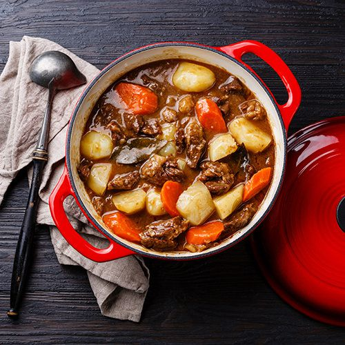

Classic stew

Description
A delicious stew, better if it takes its time to simmer.
- Potatoes
- Dried meat
- Courgette
- Red bell pepper
- Tomatoes
- Onion
- Bake the dried meat and onion with some paprika spice and tomato extract.
- Add the courgette and red bell pepper
- Add water and potatoes
- Let simmer for as long as you are patient
Home